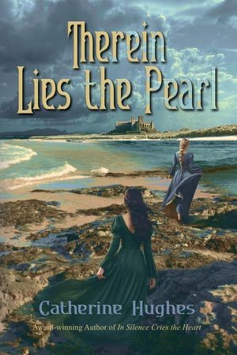
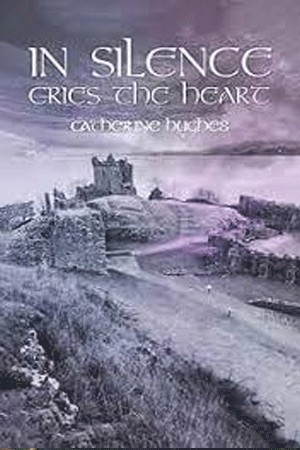

Plimoth, 1621. The Fortune has anchored off Cape Cod.
When fear takes root, innocence is the first sacrifice.
Shadows in the wilderness. Witchery in New England.
Thorn of Plimouth
Rachel Haverford, a young healer, is accused of witchcraft. Her one ally is a Pokanoket warrior, and their forbidden love could cost them everything.
Neighbors turned against one another, families were split apart.
From my Literary Titan interview, on the pandemic behind this bookNot only brave and faithful
I wanted the settlers on the page as they were, hindered by suspicion and doubt, through a harsh winter and hunger. I read Nathaniel Philbrick’s Mayflower and David Silverman’s This Land is Their Land, and I wanted Keme’s side told with fairness and sensitivity.
Rachel’s Welsh background and her devotion to her mother’s memory are where her independent spirit comes from.
The opening earned an Honorable Mention in the Historical Novel Society’s First Chapters competition.
Therein Lies the Pearl
The years before and after the Norman Conquest. Celia and Margaret, a Norman girl and a Saxon princess on opposite sides of the Channel, each looking for someone they can trust.
- 2026 PenCraft Gold Medal, Historical Fiction
- International Firebird Book Award, Historical Fiction


In Silence Cries the Heart
Based on a true story of Urquhart Castle.
A trip to Urquhart Castle, on the banks of Loch Ness, is what brought me back to storytelling.
The kid with the book
I grew up with a book in my hands, in the Bronx and then on Long Island. One summer there I published a neighbourhood newsletter, printed it at the library and delivered it by hand. I stopped when autumn came.
These days it’s easier to reach me. Write to catherinehughesauthor@gmail.com, or find me on Instagram.